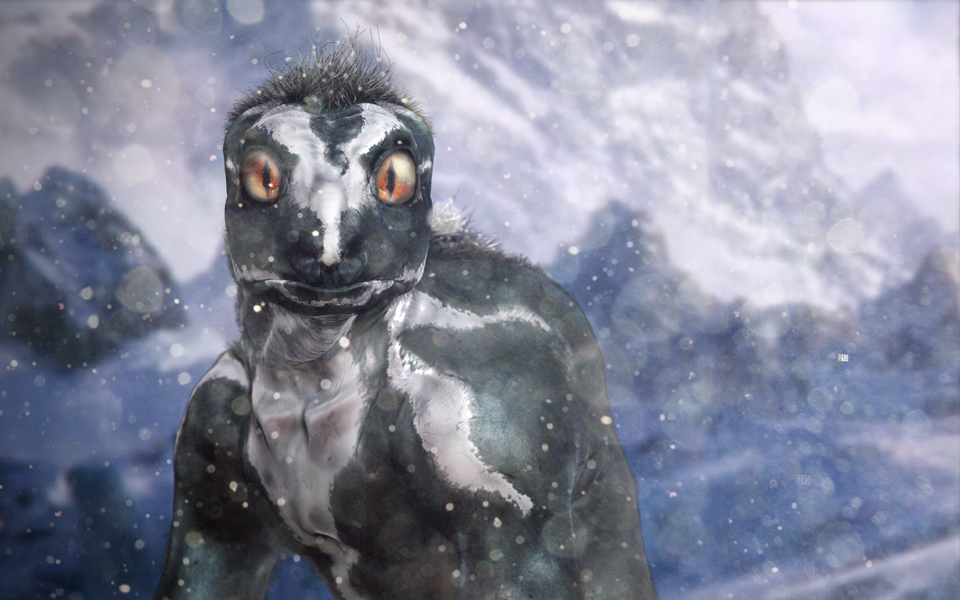
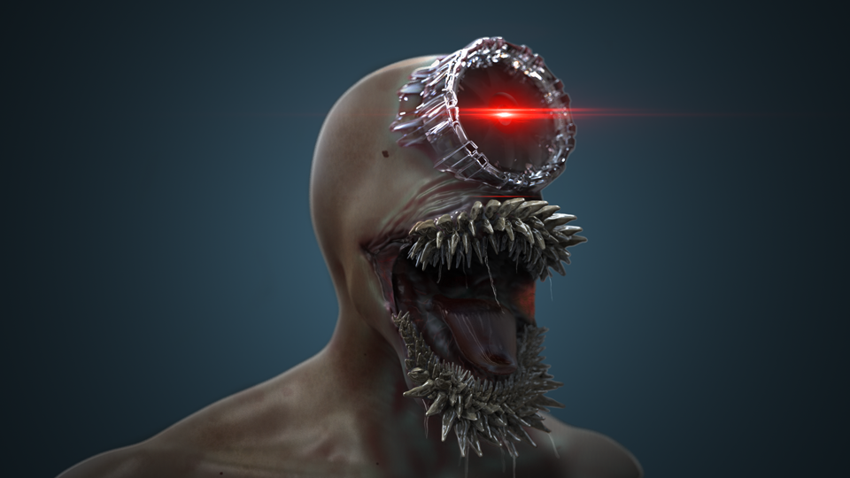

Creatures/Characters
Delta Vega
 A concept creature I conceived that lives on Star Trek's Delta Vega. A gentle humanoid species that relies on roots under the ice, the creature is large and bulky relying on its strength to find food and escape from predators. It has a strong sense of smell and extraordinary sight which helps it survive and find its main food source on the dark icy planet. It has rows of small grinding teeth similar to that of a cow. It’s skin is similar to that of a shark allowing for the tempered weather to have minimal effect, and the coarseness of the skin keeps any ice from collecting as it would on fur.
I painted him using reference from a great white shark, the dark grey and how it transitions to a piercing white underneath. Using his dark skin to absorb as much heat possible, while the white under his face and chest limits the amount of reflection off the snow to affect his sight.


M.A.A.C. aka Mobile Autonomous Agent Coruscate
M.A.A.C. is a biological super-software that has been developed to collect, monitor and destroy any threat within its “Coded Law”. An intelligent software application with the authorization and capability to sense its environment and work in a goal directed manner. The level of complexity of the tasks involved approaches that which would previously have required human intervention.